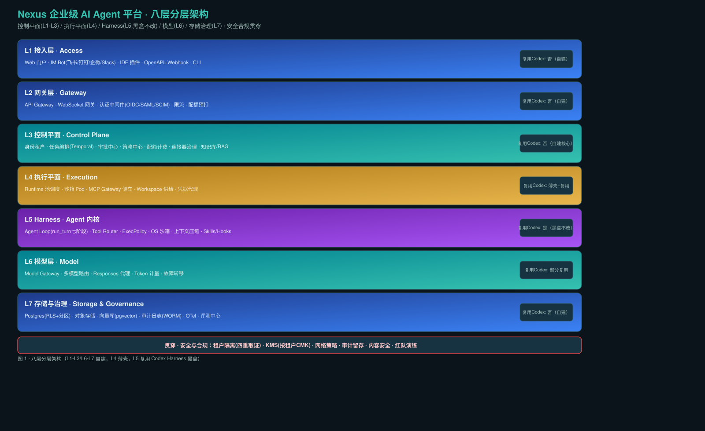
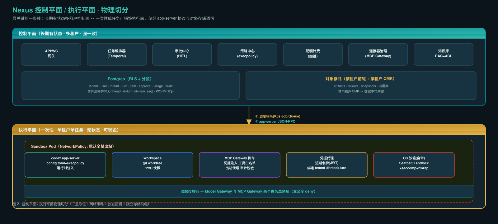
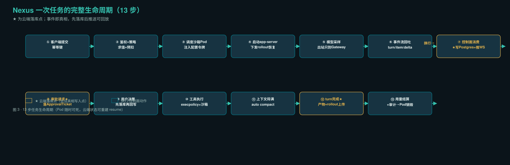

0. 架构判断（结论先行）
五个决定成败的设计判断
| # | 判断 | 理由 |
|---|---|---|
| 1 | 必须走 app-server（JSON-RPC）集成 | 只有 app-server 提供长生命周期 Thread、双向事件流、turn/interrupt、协议级审批回写、thread/resume/fork/revert |
| 2 | 会话真相在云端 DB，Harness 只持有"可重建的执行态" | 控制面消费 app-server 事件流写 Postgres，rollout 同步对象存储，Pod 死不丢会话 |
| 3 | 沙箱内零长期密钥 | 短期、按任务绑定、可撤销令牌；模型调用经 Model Gateway，MCP 凭据由 MCP Gateway 侧车注入 |
| 4 | 权限分三层，execpolicy 是天然政策下发载体 | 平台身份→工作区/环境→工具与命令；Codex execpolicy（Starlark）+ approval_policy + sandbox.mode 承接第三层 |
| 5 | 不改 Harness 内核 | 上游日均 10+ commit、106 crate；配置驱动+事件桥接+外壳包装 |
1. 八层分层架构
Nexus 采用「控制平面/执行平面物理分离」的八层架构。L1–L3 与 L6–L7 自建，L4 是自建外壳，L5 复用 Codex Harness（黑盒不改）。

八层职责速览
| 层 | 职责 | 复用 |
|---|---|---|
| L1 接入层 | Web 门户 · IM Bot(飞书/钉钉/企微/Slack) · IDE 插件 · OpenAPI+Webhook · CLI | 自建 |
| L2 网关层 | API Gateway · WS 网关 · 认证中间件(OIDC/SAML/SCIM) · 限流 | 自建 |
| L3 控制面 | 身份租户 · 任务编排(Temporal) · 审批中心 · 策略中心 · 配额计费 · 连接器治理 · 知识库/RAG | 自建核心 |
| L4 执行面 | Runtime 池 · 沙箱 Pod · MCP Gateway 侧车 · Workspace 供给 · 凭据代理 | 薄壳+复用 |
| L5 Harness | Agent Loop(run_turn七阶段) · Tool Router · ExecPolicy · OS 沙箱 · 压缩 · Skills/Hooks | 黑盒不改 |
| L6 模型层 | Model Gateway · 多模型路由 · Responses 代理 · Token 计量 | 部分复用 |
| L7 存储 | Postgres(RLS+分区) · 对象存储 · 向量库 · 审计(WORM) · OTel · 评测 | 自建 |
| 贯穿 | 租户隔离(四重取证) · KMS(按租户CMK) · 网络策略 · 审计 · 内容安全 · 红队 | 自建 |
2. 控制平面 / 执行平面物理切分
这是整个架构里最关键的一条线：长期有状态多租户控制面 ↔ 一次性单任务可销毁执行面，仅经 app-server 协议与对象存储通信。

六条设计原则
- 控制/执行分离：控制面长期有状态、多租户、强一致；执行面无状态、一次性、可随时销毁
- Harness 不持有企业真相：租户/权限/凭据/计费/审计全在控制面
- 事件即事实：所有对用户可见状态都来自 app-server 事件流；前端不直连 Harness
- 默认最小权限：新租户默认只读沙箱+全量审批；权限只能显式提升
- 可重建优于高可用：任何 Pod 死亡都能从云端状态重建
- 配置即政策：租户差异表达为下发的 config.toml + execpolicy 规则集
3. 一次任务完整生命周期（13 步）

逐步说明
| 步 | 动作 | 关键设计点 |
|---|---|---|
| ① | 客户端提交任务 | 幂等键 Idempotency-Key，避免重复计费 |
| ② | 鉴权+策略求值+配额预扣 | 先扣后跑防超卖；策略快照入任务上下文防漂移 |
| ③ | 调度沙箱 Pod | 注入 config.toml、execpolicy、短期令牌；Workspace 由快照/克隆生成 |
| ④ | 启动 app-server，下发 rollout 恢复 | 首次 thread/start；恢复先下载 rollout 再 thread/resume |
| ⑤ | 模型采样 | 沙箱出站只到 Model Gateway，令牌按任务绑定 |
| ⑥ | app-server 回吐事件流 | turn/started、item/*、text delta、工具进度、审批请求 |
| ⑦ | 控制面消费事件→写云端 Postgres+WS 推前端 | 会话持久化主通道；先落库后推，可回放 |
| ⑧ | 审批请求→落 ApprovalTicket→推用户 | 最复杂桥接 |
| ⑨ | 用户决策回写→app-server 继续 | 决策先落库再回写，宕机可重放 |
| ⑩ | 工具执行 | shell 走 execpolicy+OS 沙箱；MCP 走 Gateway 注入凭据；都记 Item |
| ⑪ | 上下文将满→auto compact | 复用 Harness 压缩；压缩前完整上下文已落云端可回溯 |
| ⑫ | turn/completed→产物与 rollout 上传对象存储 | 产物扫描后才对用户可见 |
| ⑬ | 用量结算+审计→Pod 销毁 | 归还配额、写 usage、审计留痕；会话留云端可随时 resume |
4. 六个硬骨头专题
4.1 会话云端持久化：三写一致与 resume
幂等：thread_id+turn_id+item_seq 唯一键，重复事件丢弃。顺序：维护期望 seq；缺口→暂停推送、拉 rollout 补齐。不阻塞 Harness：写库失败不反压 app-server；降级本地队列+告警。大字段：shell 输出/diff 超 64KB 只存对象存储引用+摘要。resume：新 Pod→下载 rollout→thread/resume；新事件 seq 从云端最大值继续。
4.2 权限模型：三层授权
第一层 平台身份层 用户/服务账号/Agent 身份，SSO+SCIM+RBAC/ABAC
↓（能不能进这个工作区）
第二层 工作区层 仓库、数据集、连接器、知识库范围；环境标签 prod/staging
↓（这个环境里能碰什么）
第三层 工具与命令层 execpolicy 规则 + approval_policy + MCP 白名单 + sandbox.mode
↓（具体能执行什么动作）
执行，并全量记录四层交集规则：Agent 可用权限 = 用户权限 ∩ 工作区权限 ∩ Agent 角色上限 ∩ 策略中心允许
4.3 审批流：跨进程 HITL 桥接（最复杂）
app-server 发审批请求事件 → 适配层创建 ApprovalTicket(pending)（含工具名/参数脱敏/diff预览/风险/上下文快照）→ 推 Web/IM/邮件 → 用户决策 → 先落库(decided)再回写 → app-server 继续/中止。
六个边界：Pod 等待时崩溃（DB 存状态，item_seq 去重，已决策直接重放）、审批超时（默认拒绝）、审批期间权限撤销（决策时重校验）、修改参数后批准（重新走策略求值）、批量相似请求（作用域有限定）、审计（请求快照+决策人+时间+理由不可篡改）。
4.4 多租户隔离三档矩阵
| 档位 | 隔离方式 | 适用 | 成本 |
|---|---|---|---|
| 共享池 | 逻辑隔离（namespace+行级 tenant_id+网络策略） | 中小客户、非敏感 | 低 |
| 专属池 | 独立节点池+独立命名空间+独立密钥 | 大客户、合规要求 | 中 |
| 私有化 | 独立 VPC/独立集群/数据不出域 | 金融、政务、国企 | 高 |
四重取证：逻辑（Postgres RLS 兜底）+ 运行时（namespace+节点亲和+NetworkPolicy）+ 密钥（按租户 CMK，禁用后不可解密）+ 存储（按租户前缀+独立桶策略）。季度跨租户越权红队演练。
4.5 沙箱内零长期密钥 / 4.6 成本控制
零长期密钥：模型 API Key 绝不进沙箱（只到 Model Gateway）；MCP 凭据 MCP Gateway 侧车持有；Git 凭据凭据代理+只读分支；云厂商 AK/SK 用 IRSA/Workload Identity 换短期凭证。
沙箱启动自检清单：Landlock/seccomp/Seatbelt 可用性 ✓ · 出站仅两白名单地址 ✓ · 镜像无长期密钥 ✓ · 只读 rootfs+非 root ✓ · 资源限额生效 ✓（自检不过禁止调度生产任务）。
成本控制：模型分档路由 · Prompt Caching · 复用 Harness 压缩（保留推理轨迹）· 步数与预算上限 · 沙箱空闲超时回收 · 缓存任务结果 · 归因看板。
5. 技术选型与实施路线图
技术选型表
| 领域 | 方案 | 理由 |
|---|---|---|
| Agent 内核 | Codex Harness（app-server） | Apache-2.0、生产验证、沙箱与策略引擎现成 |
| 集成方式 | app-server JSON-RPC | 唯一支持长会话+事件流+中断+审批回写 |
| 编排引擎 | Temporal/Cadence | 审批跨小时，需可持久化可恢复 Workflow |
| 主库 | PostgreSQL（RLS+分区） | RLS 是租户隔离最后兜底 |
| 对象存储 | S3/MinIO（按租户前缀+CMK） | rollout/产物按租户加密隔离 |
| 命令策略 | Codex execpolicy（Starlark） | 规则语言与求值器已与会话层解耦 |
| 可观测 | OpenTelemetry + ClickHouse + Grafana | trace 串"用户→任务→工具→模型" |
四阶段实施路线
| 阶段 | 周期 | 验收 |
|---|---|---|
| 0. PoC | 4 周 | 一任务端到端跑通，会话可新 Pod 恢复 |
| 1. 单租户 MVP | M1-M4 | P0 完成率 ≥ 70% |
| 2. 多租户与隔离 | M5-M7 | 跨租户越权演练 0 通过 |
| 3. 可靠性与治理 | M8-M10 | 任务成功率 ≥ 85% |
| 4. 规模化与生态 | M11-M12+ | 100+ 并发稳定 |
6. 八条高危反模式
| 反模式 | 后果 | 正解 |
|---|---|---|
| 前端直连 Harness | 绕过审计配额 | 所有流量经网关 |
| API Key 打进沙箱镜像 | 逃逸=全量泄漏 | 短期令牌+Gateway |
| 改 Harness 内核实现企业特性 | 数周无法跟随上游 | 配置驱动+事件桥接 |
| 用 LLM 判权限 | 提示注入即提权 | 权限判定用代码策略 |
| 只做逻辑隔离 | 一个 SQL 注入跨租户 | 四重隔离 |
| 审批状态存 Harness | Pod 崩审批丢 | 控制面一等资源先落库 |
| 会话只存本地 rollout | 机器故障全丢 | 事件流落云端为真相 |
| 先做通用助手再找场景 | 无切换价值 | 绑定高价值场景切入 |
7. 配套产物索引
| 产物 | 文件 |
|---|---|
| 详细方案 | system-architecture.md |
| 八层分层架构图 | system-architecture.svg / .png |
| 控制/执行平面切分图 | control-execution-plane.svg / .png |
| 13 步生命周期图 | task-lifecycle.svg / .png |
| SVG 生成脚本 | _gen_svg.py |
../Nexus 基于CodexHarness的企业级Agent平台_系统设计与实施路线图.md 对齐，为其工程化落地版。